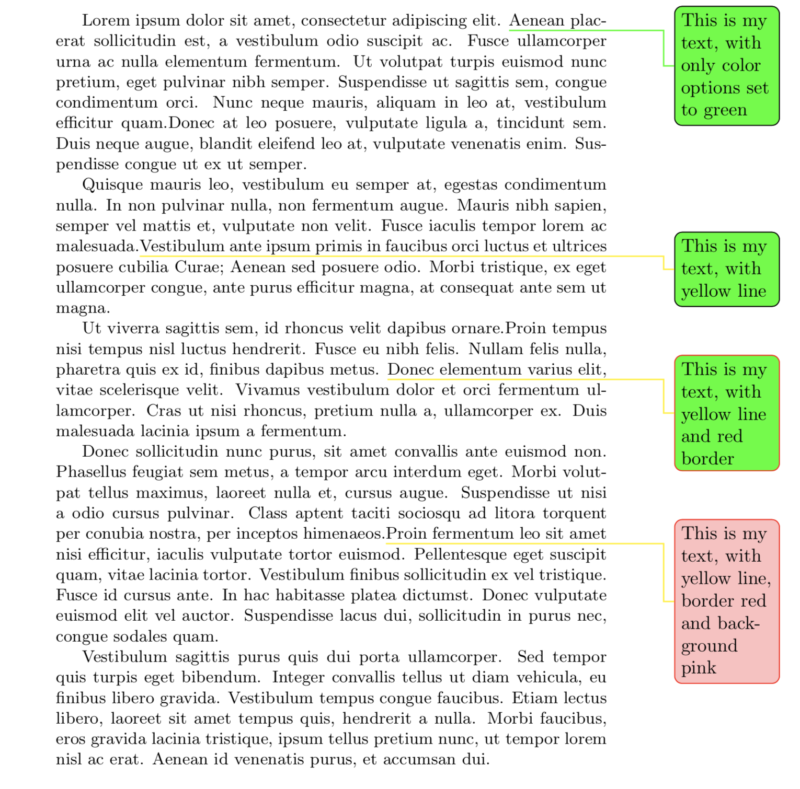
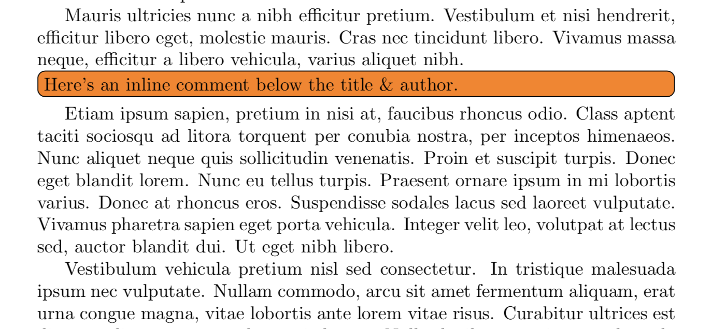
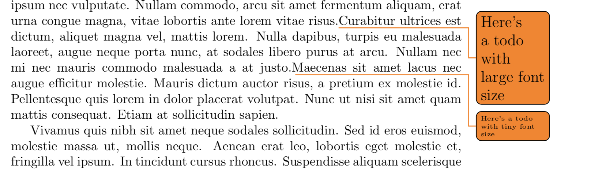
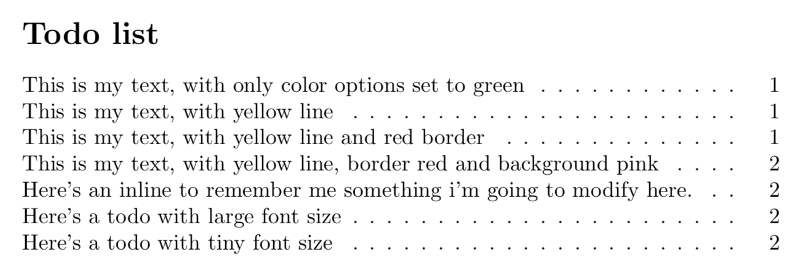
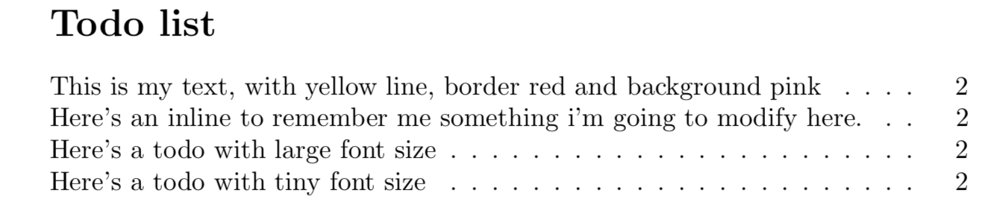

The basic command is
\todo{something you are going to do} . The
\todo command has the following structure : \todo[options]{todo text} where {todo text}
is what your are going to display, that is completely customizable by [options] parametres.
Available options
This is a list of important options to modify your \todo content:
disable option can be given directly to the todo command. If given the command simply has no effect. color options is used to change the color of your remainder (unless other options are specified,
this options will change text, background and line color). linecolor | backgroundcolor | bordercolor :
\todo[linecolor=color,backgroundcolor=color,bordercolor=color]{This is my text} 
inline is an options used to set your note inline inside text. You can control it's width using
inlinewidth options. By deafult it takes the text width:\todo[inline]{Here's an inline to remember me something i'm going to modify here.}
size option is used to modify the todo font size:\todo[size=\large]{Here's a todo with large font size} \todo[size=\tiny]{Here's a todo with tiny font size} 
list | nolist are options used to include or not a specific todo inside a todolist.
A todolist is declared using \todolist, and include all the todonotes declared below it. The default title "Todo list" can be modified using
\todolist[your title name].\todolist
With all elements in page 1 set with
nolist \todo[nolist,otherOptions]{This is my text}
